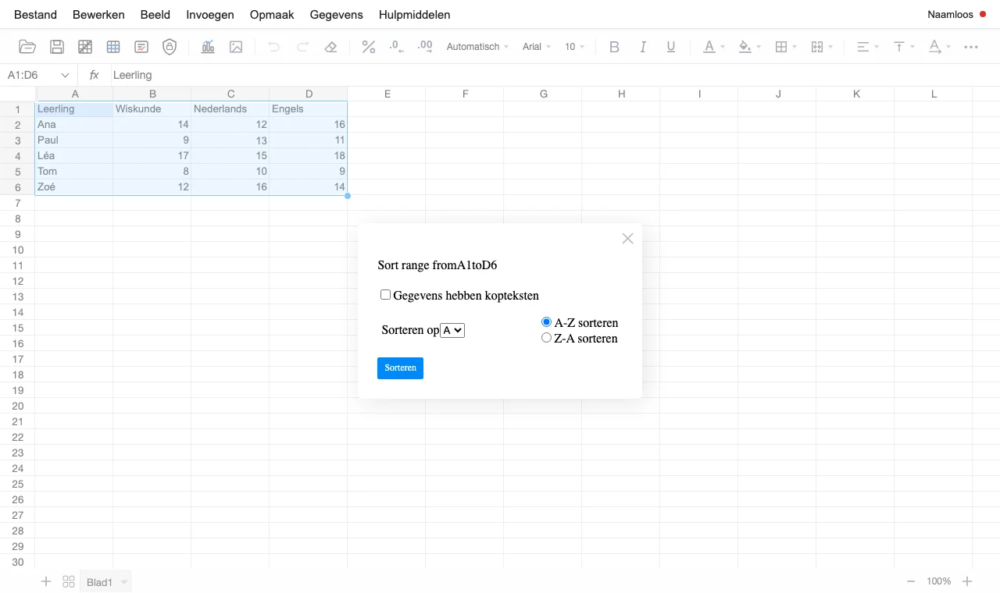
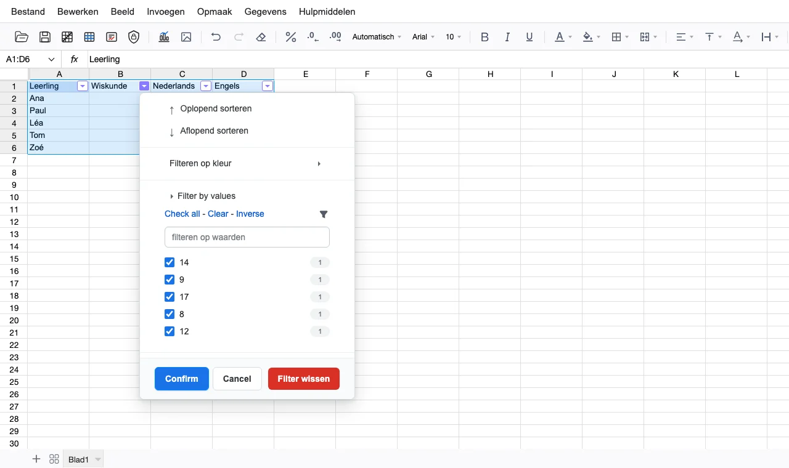
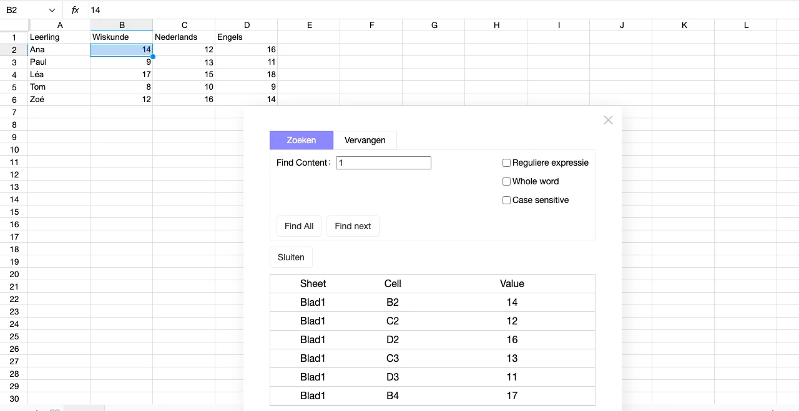

Sorteren, filteren, zoeken
Sorteren
| Opdracht | Effect |
|---|---|
| Gegevens › Sorteren en filteren › A-Z sorteren, Z-A sorteren | sorteert de selectie op haar eerste kolom; ook met en met rechtsklikken |
| rechtsklikken › Selectie sorteren | kiest de kolom, de volgorde, en of de eerste rij een kop is |

De hele tabel selecteren, niet één kolom: de rijen moeten heel blijven. Een bereik met samengevoegde cellen wordt niet gesorteerd.
Filteren
- De tabel selecteren, kop inbegrepen.
- Gegevens › Sorteren en filteren › Filter maken, of , of rechtsklikken › Selectie filteren.
- De pijl van een kolom aanklikken.

| In het menu van een kolom | Effect |
|---|---|
| Oplopend sorteren, Aflopend sorteren | sorteert de rijen van de tabel |
| Filteren op kleur | op achtergrond- of tekstkleur |
| Filter by values | de te behouden waarden aanvinken; Check all, Clear, Inverse; het veld zoekt een waarde |
| Confirm | past toe |
| Filter wissen | haalt het filter van de tabel weg |
Uitgesloten rijen worden verborgen, niet verwijderd. De filters van meerdere kolommen werken samen. Gegevens › Sorteren en filteren › Filter wissen haalt het filter weg.
Zoeken, vervangen
Ctrl F opent Zoeken, Ctrl H Vervangen.

| Optie | Effect |
|---|---|
| Reguliere expressie | de gezochte tekst is een reguliere expressie: ^A vindt wat met A begint |
| Whole word | de hele cel is gelijk aan de tekst |
| Case sensitive | onderscheidt hoofdletters en kleine letters |
| Find All | somt de gevonden cellen op; een klik op een regel gaat erheen |
| Find next | gaat naar de volgende |
| Replace, Replace All | één cel, alle |
Er wordt in het getoonde blad gezocht.